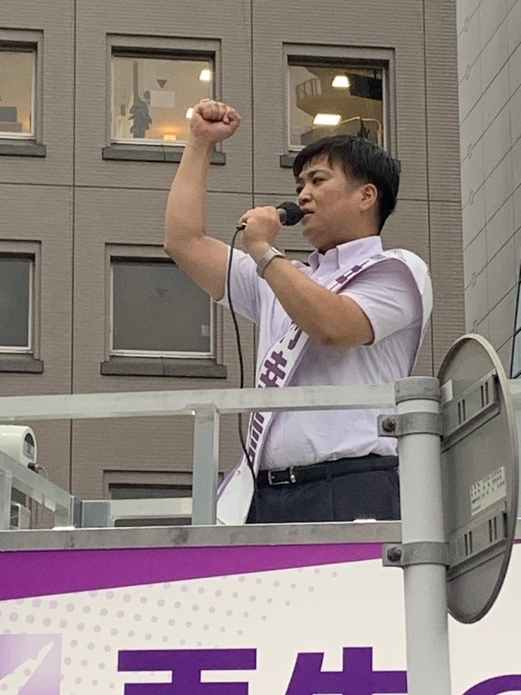

監査経験年数
クライアント数
上場企業経験
働く意欲
About

公認会計士（Certified Public Accountant）
1991年生まれ、鹿児島県大島郡徳之島出身。法政大学経営学部経営学科卒業。 大学在学中の2014年に公認会計士試験に合格。太陽有限責任監査法人（Grant Thorntonグループ）にて 上場企業20社以上の監査を担当。現在は太陽グラントソントン・アドバイザーズ株式会社に出向中。
4人の子どもの父として、人口減少社会を迎えるこれからの日本で、すべての世代が安心して暮らせる社会を目指し、 現役公認会計士の専門知識を活かして政治・行政のムダを省き効率化を行い、より住みやすい街を目指して活動中。
お問い合わせNEWS
POLICY
政治の世界の？に、あなたの当たり前として以下を持ち込みます。
"政治のニュースは難しい！"そんなあなたの声に分かりやすく面白く政治を解説することで、"なるほど！"、"そうなんだ！"を作り出すことで、政治への興味関心を引き出します。
二元代表制におけるチェック機能を正しく実現し、行政のムダを見える化します。そうすることで、みんなの声で行政のムダを省き、使えるお金を作りだすことで、いまある良い政策の強化・新たな投資をするための予算を作り出します。
政治資金やあらゆる行政の複雑な仕組みを１００社以上の監査の経験から、批判だけでなくシンプルな改善案を提案します。誰でもできる、無駄なくできることで、自治体・住民双方にとってより良い仕組みの最適化を進めます。
再生の道は多選の制限（２期８年まで）を掲げています。仕事は期限を決めてやるもの。そんな民間の当たり前を政治の世界でも徹底します。
Support
活動を支えてくださる皆さまのご支援をお待ちしております。
皆さまからのご寄付は、政治活動・政策研究・広報活動などに大切に活用させていただきます。
なお、本年の中村幸信後援会への寄付は寄付控除の対象外となります。
※政治献金には法律上の規制があります。総務省や都選管にお問い合わせください。
街頭活動・チラシ配布・調べもののお手伝いなど、様々な形（現地・リモート）でご参加いただけます。お気軽にお申し込みください。
Contact
みなさまからのご意見を気軽にご連絡ください。